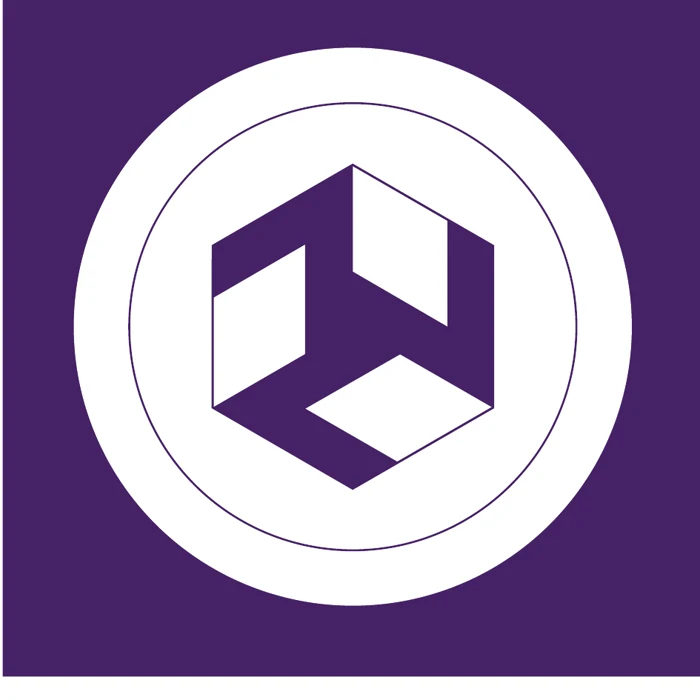
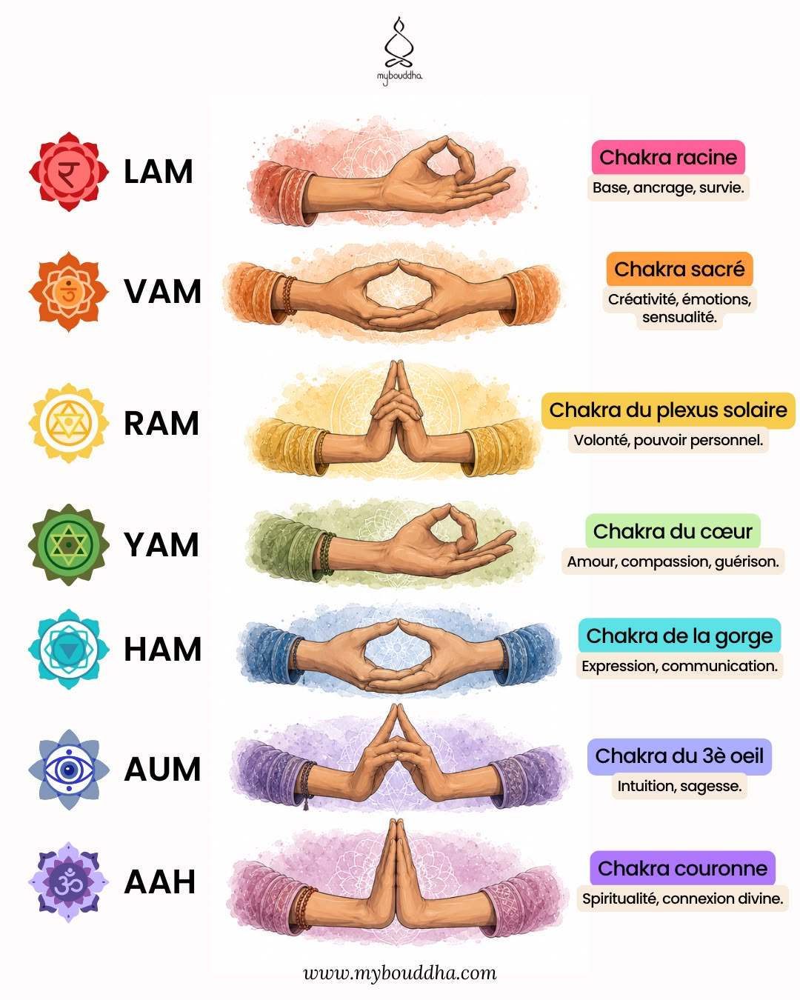

Forme Yin
Forme large issue de la première planche.
Juste pour aujourd’hui
JUSTE POUR AUJOURD’HUI
Un jour après l’autre, à ton rythme.
ICI ET MAINTENANT
Retrouver le fil de mon souffle.
UN PEU CHAQUE JOUR
Des gestes, des repères, du sens.
Mon rituel
Choisis ta durée, puis laisse-toi guider.
24 minGasshō · 7 chakras · 14 positions · clôture
À ton rythme
Choisis ce que tu souhaites explorer.
Tes repères
Couleur, position et intention symbolique.
Des repères symboliques d’après ta planche, à relier à ton enseignement.
Symboles fournis
Les formes réelles de ton document, sans redessin ni interprétation ajoutée.
Forme large issue de la première planche.

YANGForme large issue de la cinquième planche.
Cette partie sera rédigée uniquement à partir de ta formation ou d'une source identifiée. Le prototype n'invente pas d'usage.
Juste pour aujourd'hui
Une lecture sobre avant le soin.
Je laisse la colère s'apaiser.
Je laisse les soucis s'apaiser.
Je cultive la gratitude.
J'accomplis mon travail honnêtement.
Je suis bienveillant envers les êtres vivants.
Formulation provisoire à remplacer par celle transmise lors de ton initiation.
Le premier geste
Un instant pour revenir à toi.
Joins doucement les paumes devant le cœur.
Laisse les épaules se relâcher. Respire naturellement.
Dans ton parcours : 1 minute, les 5 préceptes et ta phrase d’ouverture.
Auto-traitement
Sans minuteur. Prends le temps de regarder.
Paumes posées sur les yeux
Illustrations de ta nouvelle planche. Pose les mains sans pression ; adapte les gestes à ton confort et à ta formation.
Ton rituel
Les repères que tu as transmis.
Réalise ton geste trois fois.
Deux fois, puis le nœud à la fin.
Trois passages selon ton enseignement.
« Ce qui est à toi est à toi ; ce qui est à moi reste à moi. »
Les mains et les avant-bras.
Aide-mémoire personnel : les gestes précis restent à revoir avec ton enseignant.
À explorer
Des gestes pour accompagner la méditation.
Installe-toi confortablement, les mains posées sur les genoux.
Laisse le pouce et l’index se rejoindre doucement. Les autres doigts restent détendus.
Prends quelques respirations naturelles, sans serrer les doigts. Relâche les mains quand tu le souhaites.
Les syllabes de ta planche sont des repères de méditation. Tu peux commencer simplement en silence ; les associations aux chakras dépendent de l’enseignement suivi.

Un repère méditatif à adapter à ton enseignement. Ce geste reste en dehors de ton parcours de soin.
Paramètres
Choisis ton paysage sonore.
La musique se répète jusqu’à la fin de ta séance.
Entre les gestes
Frappe 2 · résonance naturelle
Tes choix sont enregistrés automatiquement.
Sur ton téléphone
Ajoute l’application à ton écran d’accueil pour l’ouvrir en plein écran.
03:00
Inspire doucement
5
ÉTAPE 1 SUR 27
Réunis les mains et reviens au moment présent.